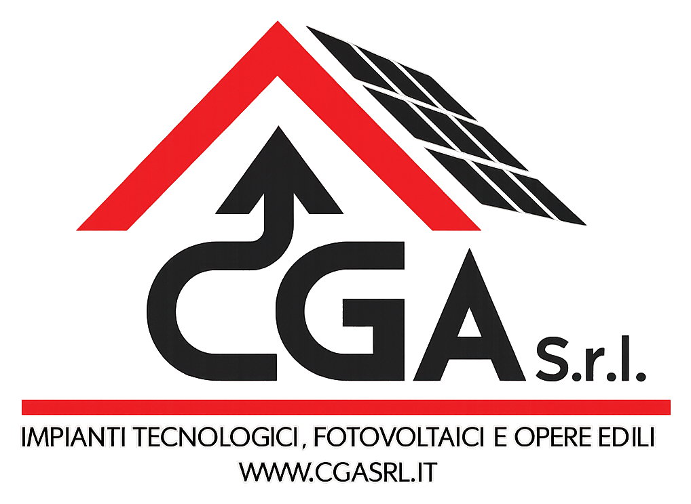

Nuovo sito CGA
Apri sito CGA
Preview pubblica del sito istituzionale. Funziona anche senza Tailscale.

Questa pagina raccoglie i link provvisori da condividere internamente per vedere il nuovo sito CGA e accedere all'applicativo SolarOS sul server UGREEN tramite Tailscale.
Preview pubblica del sito istituzionale. Funziona anche senza Tailscale.
Accesso al software sul server UGREEN. Richiede Tailscale attivo e autorizzazione alla rete CGA.
http://100.108.236.48:3000/login